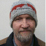

Kim Deal, gedaan op 23 februari 2007
Deze route is ook gelopen door de volgende wandelaars: Jan Jansen, Piet Pietersen, Harry Visser.
Steve Albini

Haai, mijn naam is Steve Albini en ik ben het meest bekend geworden als producer van de Pixies en natuurlijk Nirvana!